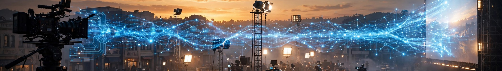

2026 年 3 月 5 日，Netflix 宣布收购 InterPositive。SEC 文件披露的价格是 5.87 亿美元现金。整个 16 人团队——工程师、研究员、创意人员——整体加入 Netflix，阿弗莱克本人任高级顾问。"16 人"这个数字经 Advanced Television、VP Land、Netflix 官方 LinkedIn 多方确认，不是传说。
先排除两个容易混淆的对象：Artists Equity 是阿弗莱克和马特·达蒙 2022 年创办的传统制片公司（出品《The Rip》《Animals》），不是 AI 公司；Staircase Studios AI 是《分歧者》制片人 Pouya Shahbazian 2025 年创办的另一家 AI 制片公司，走超低成本路线（单部预算低于 50 万美元，计划拍 30 部），和阿弗莱克无关。
Netflix 买的到底是什么？一句话：一条"每个剧组专属模型"的后期管线，外加"不对外销售"的独占权。
和一个工程师、研究员、创意人员组成的小团队一起，在一个有完整剧组配置的受控摄影棚里拍摄专有数据集……我想建一个能捕捉片场真实发生之事的工作流，用摄影师和导演本来就说的语言。—— 本·阿弗莱克，Netflix 收购声明，2026-03-05
翻译一下：从 2022 年起，他们就在摄影棚里按真实制片流程拍数据，攒了一套"电影感"专用的训练集。然后每接一部戏，就用这部戏的 dailies 再训一个专属模型，专干这部戏的后期。
关键约束：模型只改已有的画面，不生成新内容。36kr 英文报道特别点出，InterPositive 被严格限定为"工具"角色——没有任何图像生成或剧本写作功能。阿弗莱克要求"收窄数据集，只建聚焦电影制作技法的模型"。
为什么这个约束重要？因为它一次性绕开了好莱坞对 AI 最大的三个心结：演员肖像权、训练数据的 IP 污染、编剧工会的"AI 写作"红线。模型见过的数据就是本剧组拍的东西，产出也只服务于本剧组。
既然"H3 微调"的说法站不住，那 H3 本身作为一条技术线，仍然值得单独说——因为它代表了开源视频模型在 2026 年达到的能力水位，而这正是"好莱坞敢用开源模型做生产"的前提。
MiniMax H3，330 亿参数的稠密单流全模态 Transformer，2026 年 8 月 3 日开源权重。一次生成 4–15 秒、24fps、原生 768p 视频，原生 32kHz 立体声音频和画面一起生成（是"同生"，不是后期配音）。文本编码器用的是 Qwen3-VL-32B，开源了 H3-Base、FL2VA、Ref2VA 几个检查点。
发布不到一个月，fal 基于 H3 权重做了后训练版本 H3 Max，在 Design Arena 图生视频榜上 Elo 1341 排名第一，5 秒 768p 视频约 2.46 秒推理完成——比实时还快。当然，这是厂商新闻稿的自称，跑分看看就好。
两点值得注意。第一，H3 的社区许可证据技术博客解读，排除了美国、欧盟、英国、韩国的本地部署——这个解读是 C 级证据，许可证原文未直接核验，但它指向一个真问题：开源权重不等于无条件商用，好莱坞这种法务敏感的行业，用之前一定会把许可证翻烂。第二，H3 的能力形态（短时长、高帧率、音画同生）决定了它适合"镜头级"任务，而不是"成片级"任务——这恰好和 InterPositive"只改已有 footage"的约束是同一种思路：AI 做不了导演，但能做一颗极好用的"数字镜头"。
2026 年 10 月 9 日，阿弗莱克自编自导自演的《Animals》在 Netflix 上线。9 月 30 日 Bloomberg Screentime 上，阿弗莱克承认："I used [AI] for lots of things in that movie"——很多地方用了 AI，主要在后期，"让我们在某些情况下更快，做到了原本做不到的事"。
但他拒绝指认具体哪些镜头用了 AI。原话很有意思："要维护现实的幻觉"，就像魔术师不揭秘。THR 红毯采访里他说得更直白：这是一套离散的工具，"It's not about making fake people or replacing anybody, ever." 如果你能看出来哪里用了 AI，"那就搞砸了，就像一个糟糕的特效、糟糕的表演一样"。
"工业级"的真实含义：不是 demo 好看，而是观众看不出来。电影工业对 AI 的验收标准从来不是"能不能生成"，而是"能不能混进正片而不穿帮"。《Animals》是第一部公开承认使用这套技术的真人电影——注意，是"公开承认"，实际用过的可能更多。
管线层面，综合多家报道：每部戏用 dailies 训专属模型 → 后期做调色、重打光、背景替换、连续性修复、缺失镜头补拍、钢丝擦除、镜头重构。另有单一行业信源称，InterPositive 正在并入 Netflix 统一 VFX 部门 Eyeline，工具仅限 Netflix 出品及创意伙伴使用，不对外销售——这条是 C 级，待核验。
成本数字呢？说实话，拿得出手的不多。Netflix 联合 CEO Ted Sarandos 称 2026 年约 300 部 Netflix 影视用了生成式 AI（多在后期）；纪录片《The American Experiment》的 AI 视觉元素据称"两倍速、一半成本"。但这些是 Netflix 整体的笼统说法，没有 InterPositive 专项的成本/时间数据。营销语言和可验证产出之间，差着至少一个数量级。
阿弗莱克关于 AI 的公开表态，从 2024 年到现在几乎没变过，形成一条完整的言论链：
AI can write you excellent imitative verse that sounds Elizabethan. It cannot write you Shakespeare.—— CNBC 投资者峰会，2024-11（AI 能写出很棒的伊丽莎白风格仿作，但写不出莎士比亚）
AI is a craftsman at best… Craft is knowing how to work, art is knowing when to stop.—— CNBC，2024-11（AI 充其量是工匠；工匠知道如何工作，艺术知道何时停手）
从 whole cloth 生成电影是 bullshit。—— Joe Rogan 播客，2026-01（但承认 AI 会像 VFX 一样成为工具）
人们以为 AI 是无中生有——"敲几个字电脑就给你一部电影"，根本不是这回事。—— Netflix 收购声明，2026-03-05
I don't worry about Skynet.—— Bloomberg Screentime，2026-09-30（真正担心的是"习得性无助"和教育）
核心就一句话：AI 是工匠，不是艺术家；它接管的是"繁重、低创意、高成本"的环节，而不是创作本身。你可以说这是公关话术，但它和 InterPositive"只改已有 footage"的产品约束是严丝合缝的——话术和产品互相作证，这在硅谷式 AI 叙事里倒不多见。
当然，反噬也来了。Mediaweek 的批评很尖锐：他一边贬低 AI 的创作能力，一边把 AI 公司以 5.87 亿美元卖掉，之前还"under the radar"好几年。Reddit 和 TechRadar 上更多是工种焦虑：后期和 VFX 岗位会不会被吃掉。虚伪指控是否成立见仁见智，但"营销语言远超可验证产出"是事实：零公开 demo、零技术论文、基础模型匿名、《Animals》的 AI 用途刻意保密。
四条路线背后是同一个战略分叉：用专有 API，还是用开源模型自己训？InterPositive 赌的是三件事：数据留在剧组本地（dailies 不出内网）；导演"拥有"衍生模型——阿弗莱克在 THR 采访里的原话是，"你不必把它交给全世界，他们没资格拿"（"They are not entitled to that."）；结构性护城河——基座模型商品化之后，壁垒上移到"per-production 微调 + 工作流 + 数据闭环"。
好莱坞亲身下场，到底改变了什么？不是"AI 开始拍电影"——阿弗莱克自己都在骂这个叙事是 bullshit。真正的变化是生产资料的归属变了。
传统 VFX 时代，制片方买的是供应商的人时；Runway 时代，买的是 API 调用；InterPositive 模式下，剧组拥有的是一个为自己这部戏训练的专属模型——它记住了这部戏的光线、影调、演员的脸、美术的质感。杀青后这个模型就是这部戏的"数字资产"，续集、重映、衍生，接着用。
这也是 Netflix 花 5.87 亿美元的真正买点：不是 16 个人，而是一条"模型即剧组资产"的管线，外加"不卖给别人"的排他性。当基座模型被开源商品化，竞争就上移到谁有最好的 per-production 数据和工作流——而好莱坞最不缺的，恰恰是 per-production 数据和工作流。
开源模型拆掉了"模型"这堵墙，好莱坞发现墙后面的地是自己的。
| 等级 | 含义 | 本文中的例子 |
|---|---|---|
| A | 直接引言 / 官方声明 | 阿弗莱克 CNBC / Rogan / Bloomberg 原话（多家独立媒体转述一致） |
| B | 可信媒体交叉 | 16 人团队、5.87 亿美元（SEC 文件）、《Animals》用 AI、H3 技术规格 |
| C | 单源 / 待核验 | H3 许可证解读、并入 Eyeline VFX、4 项美国专利归属 |
以下事实目前没有公开来源，看到任何信源声称它们都要打问号：InterPositive 的基础开源模型具体是哪个、LoRA 还是全量微调、训练算力与数据构成、H3 是否涉入、InterPositive 专项的成本/时间节省数字、阿弗莱克个人股权收益、收购是否有业绩对赌条款。
2026-10-05 刷注
本批次刷洗（2026-10-05）：本文主体结论（InterPositive 模式、H3 不直接挂钩、Netflix 独占式路线）保持有效。仅补充：截至 2026-10 主流文生/图生视频模型最新版本：Sora 2（OpenAI，2026-09）、Veo 3（Google DeepMind，2026 夏）、Kling 2.5（快手，2026 Q3）、Runway Gen 4（2026-09）。这些更新都强化了原文判断——基座模型继续被开源/商品化竞争，好莱坞把 per-production 微调 + 工作流 + 数据闭环作为护城河的方向不变。InterPositive 与《Animals》尚未出现新的可公开验证进展。